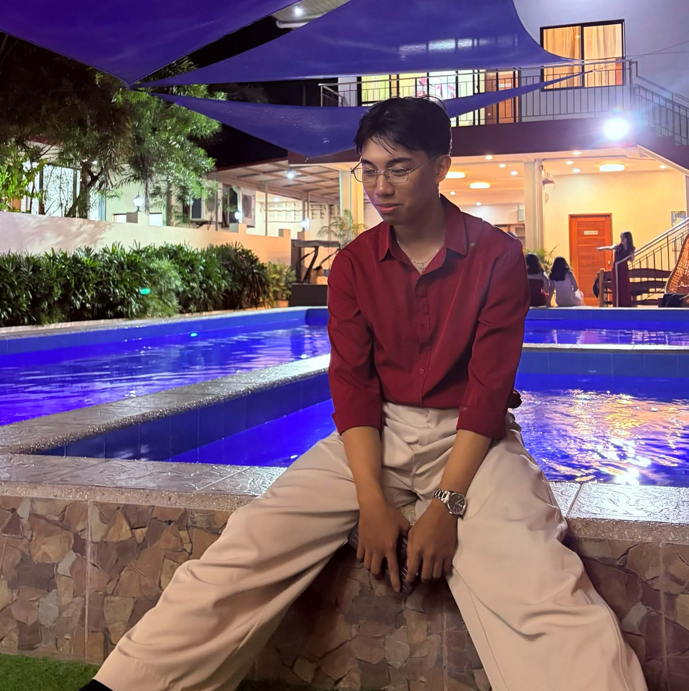

About
Data, explained clearly.
I’m Rodge Trione Estepa, a Business Analytics student. I like turning messy data into something people can understand and act on.



Follow the curiosity
What draws me in
Data cleaning
Good analysis starts with data that can be trusted, so I enjoy sorting out messy records first.
Statistics
I use statistics to check what the numbers actually support before drawing conclusions.
Dashboards
A dashboard should answer a real question at a glance, without a long explanation.
Data storytelling
Findings matter when decision makers can follow them, so I focus on the clearest way to tell the story.
From questions to insights
My tools
Spreadsheets and BI
Programming and analysis
The approach
How I work
Understand the business question
I start by asking what decision the data should support, and who will use the answer.
Analyze the data
I clean it, check it, and use the right tools and statistics to find what it really says.
Communicate the findings
I present results in plain language with clear visuals, so the next step is easy to see.